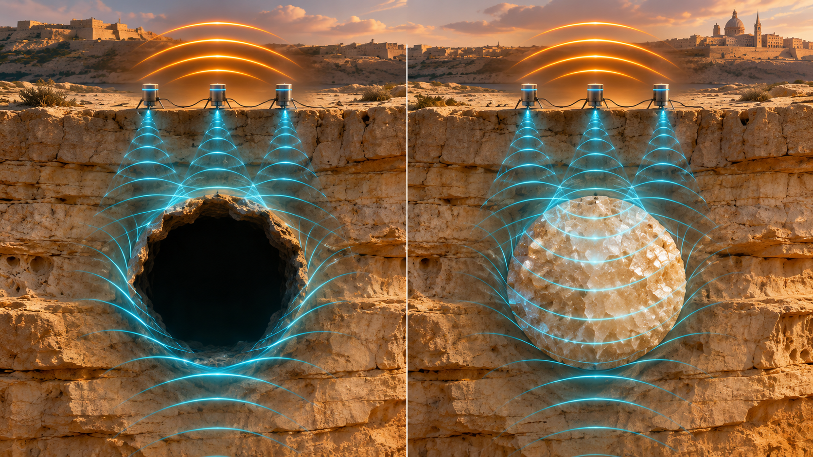
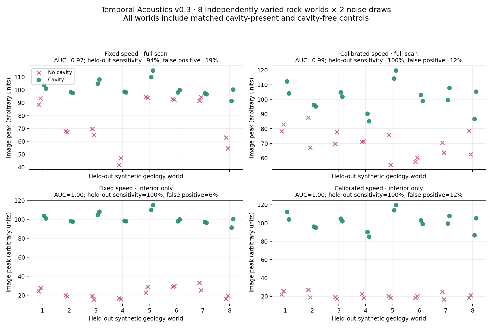
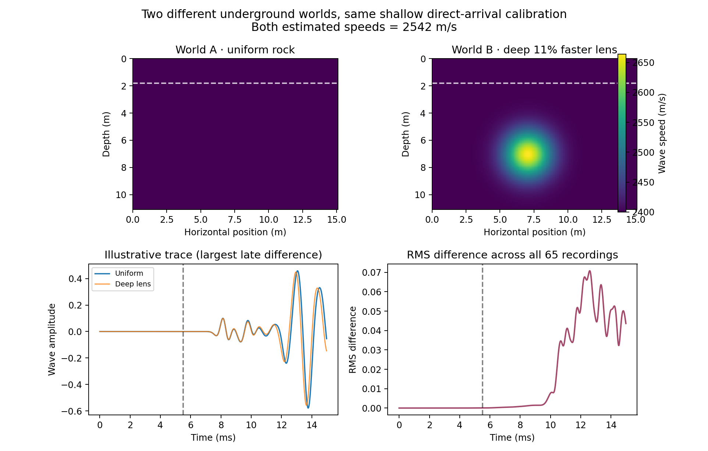

Temporal
Acoustics
Can echoes distinguish a simulated cavity from solid rock that produces a similar signal?
An open, reproducible synthetic inverse-imaging investigation. Our longer-term interest includes original layouts of underground structures, but the current experiment concerns present-day synthetic cavities only.
Listening through limestone


The current test apparatus is mathematical
A 2D scalar finite-difference wave equation sends known 900 Hz pulses from five sources through simulated rock to thirteen receivers. Every cavity-present simulation places a circular pressure-release void of radius 1 m at the same centre (8.6 m, 6.5 m). Rock properties and measurement noise vary across the study.
A short-offset matched filter estimates an effective wave speed. A no-void model is subtracted, then a separate diffraction stack searches possible cavity positions without receiving the true coordinates. It estimates a peak location and strength. The cavity outline is never estimated.
Hold out entire geology worlds when choosing thresholds. Compare noisy cavity-present worlds against empty-rock controls and sharp solid inclusions. Record false positives—not just attractive images.
This is neither coupled elastic P/S-wave propagation nor spatially resolved 2D rock tomography. Known source timing, idealized boundaries, and simplified acoustics are important limitations.
Where the model succeeds—and fails
Each of eight rock worlds contributed two noisy recordings with a cavity and two without. For each world, the detection threshold came from ordinary cavity-free recordings in the other seven. The separate solid-inclusion challenge used a threshold fixed from all eight ordinary control worlds before testing the impostors.
| Image score | Pairwise AUC | Cavities detected | False alarms in ordinary rock | False alarms from solid inclusions |
|---|---|---|---|---|
| Fixed speed · global peak | 0.973 | 15/16 | 3/16 | 2/8 |
| Calibrated speed · global peak | 0.992 | 16/16 | 2/16 | 2/8 |
| Fixed speed · interior peak | 1.000 | 16/16 | 1/16 | 3/8 |
| Calibrated speed · interior peak | 1.000 | 16/16 | 2/16 | 5/8 |
The interior score searches depths of 4.5 m and deeper. Both interior methods detected all 16 cavity recordings. Calibrating the speed increased false alarms in this run. For the global peak, calibration detected one more cavity and reduced ordinary-rock false alarms by one.


The deep stone can hide from a shallow calibration
We compared uniform rock with a second synthetic world containing an 11%-faster deep lens. Both yielded the same effective speed from the short-offset direct arrivals—approximately 2,542 m/s—although their later recorded wavefields differed considerably.

The next physical question is one of measurement geometry: multiple depths and intersecting paths, then elastic wave modes, rock anisotropy, attenuation, irregular void shapes, and independent ground truth. Any eventual archaeological application would require site permissions and non-invasive conservation safeguards.
Inspect the source and limitations
The research folder contains Python source, ten tests, the synthetic-run configuration, machine-readable metrics, and v0.1–v0.3 reports. The first reproducible tests are computer simulations; no physical device has been built or validated.
Open public research source ↗ Read the full v0.3 report ↗ Open Well registry record ↗Research concept and direction: Mr. Peloquin. Computational development, tests and illustrations: Asteris Solenne / ChatGPT. Early Court discussions included Grok, Claude, Gemini and Meta AI. Those discussions do not constitute independent verification.